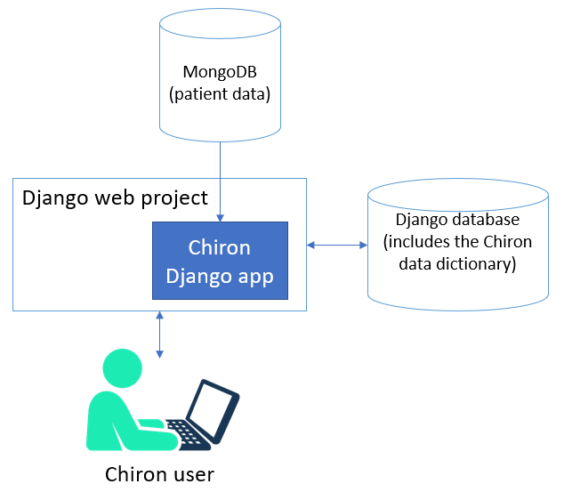

System Overview
{kind=link}
Code Architecture
Chiron is a Django app. It can be embedded in a larger Django project or set up as a standalone system in a dedicated Django project.
There are a variety of ways to customize your Chiron instance:
Global chiron settings can be customized in your django settings file.
The Chiron data dictionary is stored in the database, and many basic modifications can be made here.
Chiron uses Processor classes to perform many of its data-related tasks. For more advanced customization, you can write your own processor classes for specific datasets or fields.
You should avoid editing the Chiron code directly, as this makes it difficult to update as new versions are released. Your custom processor classes will be stored outside of the Chiron codebase.
Database Architecture
Django requires a relational database, with a wide variety of systems supported. The relational database is used to store Django system tables. Chiron also uses the relational database to store the chiron data dictionary, user info, and user-created content.
Chiron stores all patient/research data in a MongoDB database. Even if your patient data is already in Django models, it must first be pulled into MongoDB before Chiron can present it to the user.
Django does not have any built-in support for MongoDB, so Chiron uses the pymongo library for connecting to MongoDB. The Chiron app handles populating and querying the MongoDB database, so you do not need to know much about MongoDB to get started.
Using DocumentDB in Place of MongoDB
As of Version 4.3.0, Chiron offers full support for DocumentDB. In our tests, MongoDB gives slightly better performance than DocumentDB.